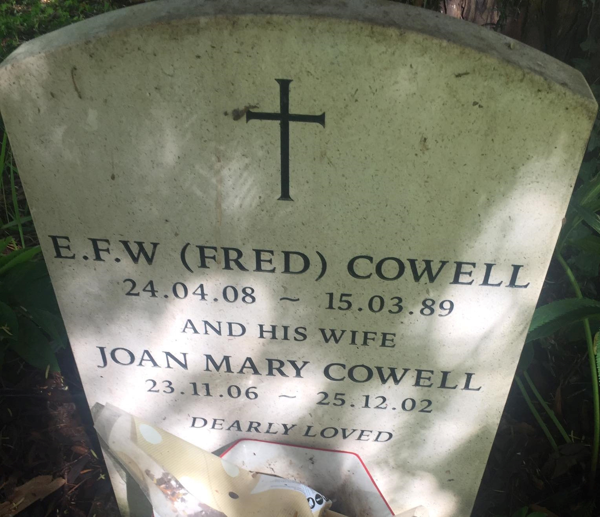
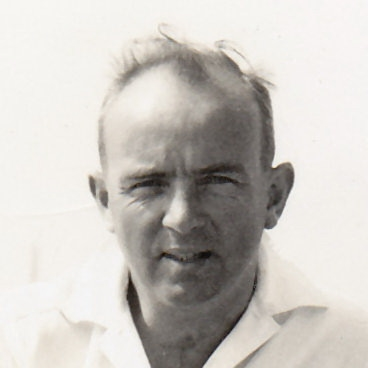
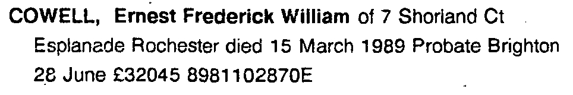
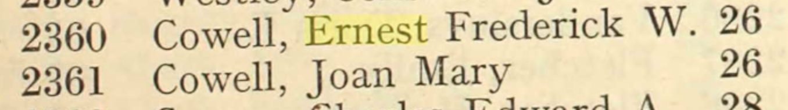
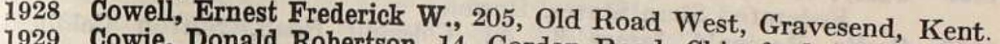
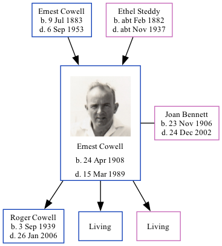

Ernest Frederick William Cowell 1908 - 1989
[ Home ] | [ Calendar ] | [ Surnames Index ] | [ Family History ]An of electrical & mechanical at present engaged on production for air raid shelters manager and the son of Ernest Cowell (a mechanical engineering draughtsman) and Ethel Steddy, Ernest Cowell, the fourth cousin once-removed on the mother's side of Nigel Horne, was born in Medway, Kent, England on Apr 24, 19081,2,3 and married Joan Bennett (an index clerk with whom he had 3 children: Roger Housden, Clive D and Hilary M, along with 2 surviving children) at All Saints, Perry Street, Northfleet, Kent, England on Aug 26, 19334.
Throughout his life, Ernest lived in several places: on 1 Campbell Road, Gravesend, Kent on Apr 2, 19116; at 205 Old Road West, Gravesend, Kent in 1930; at 26 Willersley Avenue, Chislehurst, Kent on Sep 29, 19391 and in 19455; and at 7 Shorland Court, Esplanade, Rochester, Kent in 1989. In 1959 he traveled from New York, New York, USA to Southampton, Hampshire, England (RMS Queen Elizabeth), arriving on 16 Feb (rMS Queen Elizabeth.).
He died on Mar 15, 1989 in Chatham, Kent3 and was buried at St Marys Church, Fawkham, Kent after Mar 15, 1989.
Parents
- Ernest Benjamin was born on Jul 9, 1883
- Ethel Maud was born c. Feb 1882
Children
- Roger Housden was born on Sep 3, 1939
Citations
- 1939 Register - Findmypast (was the head of the household)
- England & Wales births 1837-2006 - Findmypast
- England & Wales deaths 1837-2007 - Findmypast
- England & Wales marriages 1837-2008 - Findmypast
- Bexley, Kent, England, Electoral Registers, 1734-1965
- 1911 Census for England & Wales - Findmypast (was age 2 and the son of the head of the household)
Media
Ernest Cowell - Joan Bennett - gravestone

Ernest Frederick William Cowell

Ernest Cowell - probate

Electoral Register - 1945

Electrical Engineer's List - 1930

England & Wales births 1837-2006 - BMD/B/1908/2/AZ/000138/356
England & Wales deaths 1837-2007 - BMD/D/1989/3/77201301
1911 Census for England & Wales - GBC/1911/RG14/03831/0641/3
England & Wales marriages 1837-2008 - BMD/M/1933/3/AZ/000307/080
Passenger Lists leaving UK 1890-1960 Transcription - TNA-BT27-1861000070-00025
1939 Register Transcription - TNA-R39-1246-1246B-016-14
Kent marriages and banns - PRS/MEDWAY/MAR/0120658/1
Family Tree
Generated by Ged2Site. Last updated on Jul 20, 2025